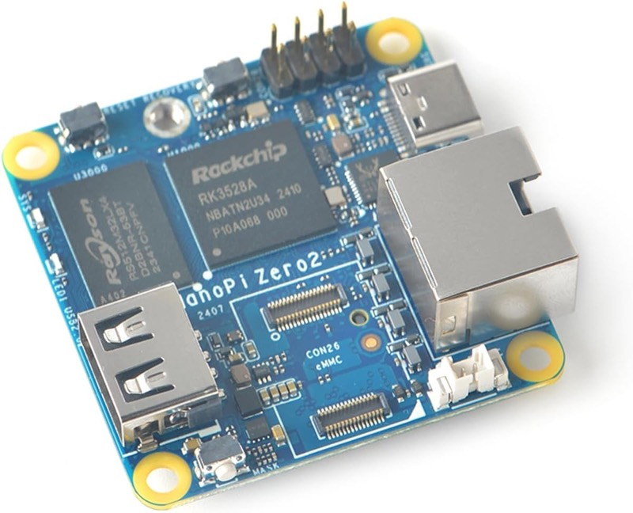
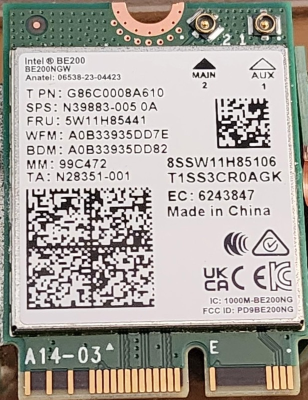
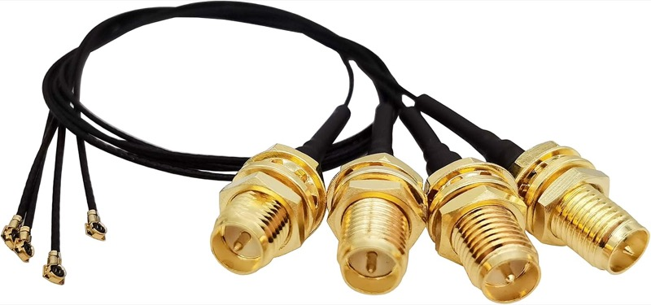
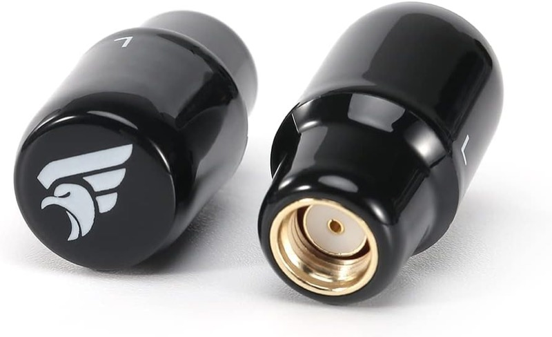
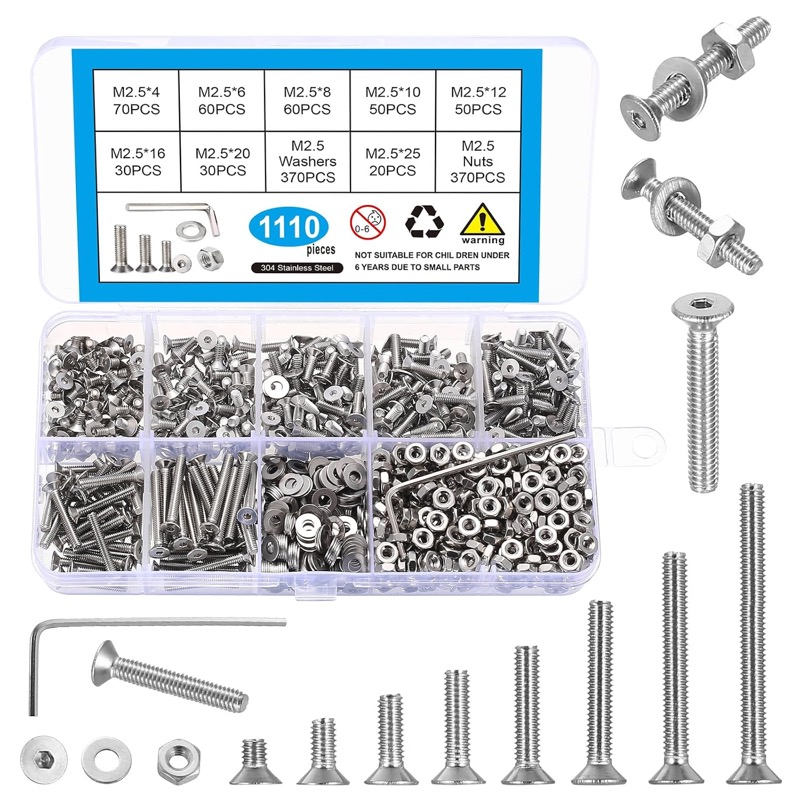
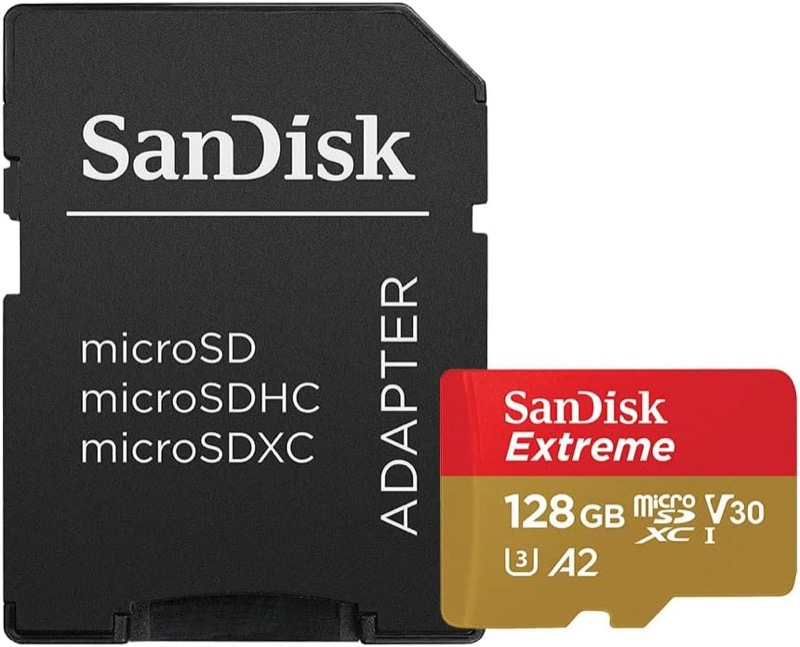
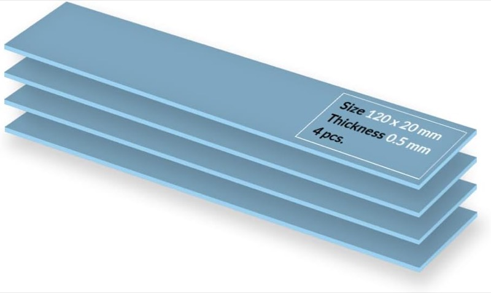
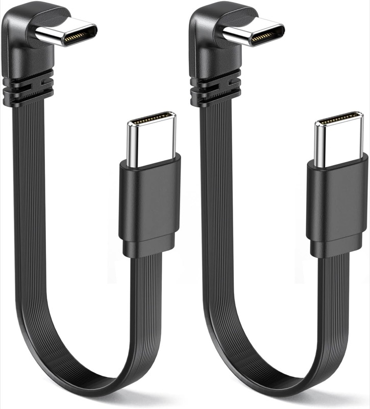
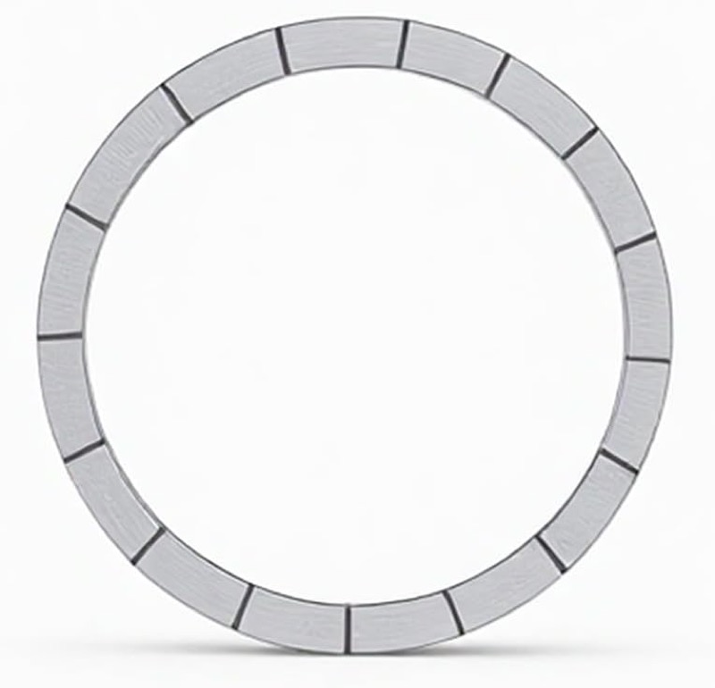

<title>Sensor Build Guide</title>
<link rel="preconnect" href="https://fonts.googleapis.com">
<link rel="preconnect" href="https://fonts.gstatic.com" crossorigin>
<link rel="stylesheet" href="https://fonts.googleapis.com/css2?family=Archivo:wght@500;600;700;800&family=JetBrains+Mono:wght@400;500;700&family=Source+Serif+4:opsz,wght@8..60,400;8..60,600&display=swap">
<style>
:root {
  --ground:      #EDEFF2;
  --surface:     #FFFFFF;
  --surface-2:   #E4E8ED;
  --ink:         #161A20;
  --ink-2:       #4E5762;
  --ink-3:       #78828E;
  --rule:        #D2D7DE;
  --rule-strong: #B4BCC6;
  --accent:      #B85A18;
  --accent-soft: #F0E0D2;

  /* Channel-width ramp: cool = narrow, hot = wide. Same convention the
     signal heatmaps in this project use, where red means strong. */
  --w40:  #31647F;
  --w80:  #C07C14;
  --w160: #B85A18;
  --w320: #8E2C1C;

  --ok:   #2E6B4F;


  --pcb:    #2F4A3C;
  --chip:   #1D2630;
  --metal:  #AAB3BD;
  --gold:   #C8963E;
  --pad:    #7FA8C4;
  --pad-2:  #9CC0D8;
  --photo-bg: #FFFFFF;

  --shell: 1180px;
  --measure: 68ch;
}

@media (prefers-color-scheme: dark) {
  :root:not([data-theme="light"]) {
    --ground:      #101319;
    --surface:     #171B22;
    --surface-2:   #1F242D;
    --ink:         #E4E8ED;
    --ink-2:       #9DA7B3;
    --ink-3:       #737E8B;
    --rule:        #272E38;
    --rule-strong: #3A434F;
    --accent:      #E08B44;
    --accent-soft: #33251A;

    --w40:  #5A9CBC;
    --w80:  #D9A03C;
    --w160: #E08B44;
    --w320: #C9563C;

    --ok:   #63AE87;

    --pcb:    #2A4437;
    --chip:   #0E1319;
    --metal:  #7C8792;
    --gold:   #D8A44E;
    --pad:    #3F6A86;
    --pad-2:  #4E819F;
    --photo-bg: #E9EBEE;
  }
}

:root[data-theme="dark"] {
  --ground:      #101319;
  --surface:     #171B22;
  --surface-2:   #1F242D;
  --ink:         #E4E8ED;
  --ink-2:       #9DA7B3;
  --ink-3:       #737E8B;
  --rule:        #272E38;
  --rule-strong: #3A434F;
  --accent:      #E08B44;
  --accent-soft: #33251A;

  --w40:  #5A9CBC;
  --w80:  #D9A03C;
  --w160: #E08B44;
  --w320: #C9563C;

  --ok:   #63AE87;

  --pcb:  #2A4437;
  --chip:   #0E1319;
  --metal:  #7C8792;
  --gold:   #D8A44E;
  --pad:  #3F6A86;
  --pad-2:  #4E819F;
  --photo-bg: #E9EBEE;
}

* { box-sizing: border-box; }

body {
  margin: 0;
  background: var(--ground);
  color: var(--ink);
  font-family: "Source Serif 4", Georgia, "Times New Roman", serif;
  font-size: 17px;
  line-height: 1.62;
  -webkit-font-smoothing: antialiased;
}

.shell {
  max-width: var(--shell);
  margin: 0 auto;
  padding: 0 28px;
}

h1, h2, h3, .eyebrow, .stat-label, th, .btn, .chip {
  font-family: Archivo, "Helvetica Neue", Arial, sans-serif;
}

code, kbd, .mono, .val, pre {
  font-family: "JetBrains Mono", ui-monospace, SFMono-Regular, Menlo, monospace;
  font-variant-ligatures: none;
}

a { color: var(--accent); text-decoration-thickness: 1px; text-underline-offset: 2px; }
a:focus-visible, .btn:focus-visible {
  outline: 2px solid var(--accent);
  outline-offset: 3px;
  border-radius: 2px;
}

.eyebrow {
  font-size: 11.5px;
  font-weight: 600;
  letter-spacing: 0.13em;
  text-transform: uppercase;
  color: var(--ink-3);
  font-family: "JetBrains Mono", ui-monospace, monospace;
}

/* ---------- masthead ---------- */

.masthead {
  border-bottom: 1px solid var(--rule);
  background: var(--surface);
  padding: 46px 0 0;
}

.masthead-grid {
  display: grid;
  grid-template-columns: minmax(0, 1.45fr) minmax(0, 1fr);
  gap: 56px;
  align-items: start;
}

h1 {
  font-size: clamp(38px, 5.4vw, 62px);
  font-weight: 800;
  letter-spacing: -0.033em;
  line-height: 1.02;
  text-wrap: balance;
  margin: 14px 0 0;
}

h1 .thin { font-weight: 500; color: var(--ink-2); display: block; }

.lede {
  max-width: var(--measure);
  margin: 22px 0 0;
  font-size: 19px;
  color: var(--ink-2);
}

.lede strong { color: var(--ink); font-weight: 600; }

.masthead-side {
  border-left: 1px solid var(--rule);
  padding-left: 28px;
  margin-top: 6px;
}

.statlist {
  display: grid;
  gap: 0;
  margin: 0;
}

.statrow {
  display: grid;
  grid-template-columns: 84px minmax(0, 1fr);
  gap: 14px;
  padding: 9px 0;
  border-bottom: 1px solid var(--rule);
  align-items: baseline;
}
.statrow:first-child { border-top: 1px solid var(--rule); }

.stat-label {
  font-size: 10.5px;
  font-weight: 600;
  letter-spacing: 0.1em;
  text-transform: uppercase;
  color: var(--ink-3);
}

.val {
  font-size: 13.5px;
  font-weight: 500;
  color: var(--ink);
  font-variant-numeric: tabular-nums;
  word-break: break-word;
}

.getrow {
  display: flex;
  flex-wrap: wrap;
  gap: 14px;
  align-items: center;
  margin: 34px 0 0;
  padding: 0 0 40px;
}

.btn {
  display: inline-flex;
  align-items: baseline;
  gap: 10px;
  background: var(--accent);
  color: #FFFFFF;
  text-decoration: none;
  font-size: 14px;
  font-weight: 600;
  letter-spacing: 0.01em;
  padding: 12px 20px;
  border-radius: 2px;
}
.btn .sz {
  font-family: "JetBrains Mono", monospace;
  font-weight: 400;
  font-size: 12px;
  opacity: 0.82;
}
.btn:hover { filter: brightness(1.08); }

.hash {
  font-size: 11.5px;
  color: var(--ink-3);
  word-break: break-all;
  max-width: 46ch;
  line-height: 1.5;
}

/* ---------- sections ---------- */

section { padding: 62px 0 0; }

.sec-head {
  display: flex;
  align-items: baseline;
  gap: 16px;
  border-bottom: 1px solid var(--rule-strong);
  padding-bottom: 10px;
  margin-bottom: 30px;
}

h2 {
  font-size: 23px;
  font-weight: 700;
  letter-spacing: -0.018em;
  margin: 0;
  text-wrap: balance;
}

.sec-head .eyebrow { margin-left: auto; text-align: right; }

.prose { max-width: var(--measure); }
.prose p { margin: 0 0 18px; }
.prose p:last-child { margin-bottom: 0; }

/* ---------- spectrum chart ---------- */

.chart-wrap {
  background: var(--surface);
  border: 1px solid var(--rule);
  border-radius: 3px;
  padding: 26px 22px 18px;
  overflow-x: auto;
}

.chart-wrap svg { display: block; min-width: 830px; width: 100%; height: auto; }

.sv-band  { font-family: "JetBrains Mono", monospace; font-size: 11px; font-weight: 700; fill: var(--ink); letter-spacing: 0.06em; }
.sv-unii  { font-family: "JetBrains Mono", monospace; font-size: 9px;  fill: var(--ink-3); letter-spacing: 0.04em; }
.sv-freq  { font-family: "JetBrains Mono", monospace; font-size: 9px;  fill: var(--ink-3); font-variant-numeric: tabular-nums; }
.sv-card  { font-family: Archivo, sans-serif; font-size: 12px; font-weight: 600; fill: var(--ink); }
.sv-chip  { font-family: "JetBrains Mono", monospace; font-size: 9.5px; fill: var(--ink-3); }
.sv-inbar { font-family: "JetBrains Mono", monospace; font-size: 10px; font-weight: 700; fill: #FFFFFF; font-variant-numeric: tabular-nums; }
.sv-rule  { stroke: var(--rule); stroke-width: 1; }
.sv-tick  { stroke: var(--rule-strong); stroke-width: 1; }

.legend {
  display: flex;
  flex-wrap: wrap;
  gap: 8px 22px;
  align-items: center;
  margin-top: 18px;
  padding-top: 14px;
  border-top: 1px solid var(--rule);
}

.lg {
  display: inline-flex;
  align-items: center;
  gap: 7px;
  font-family: "JetBrains Mono", monospace;
  font-size: 11px;
  color: var(--ink-2);
}
.lg i {
  width: 22px;
  height: 11px;
  border-radius: 1px;
  display: inline-block;
}

.caption {
  margin: 14px 0 0;
  font-size: 14px;
  color: var(--ink-3);
  max-width: var(--measure);
  line-height: 1.55;
}

/* ---------- tables ---------- */

.tablewrap { overflow-x: auto; }

table {
  width: 100%;
  border-collapse: collapse;
  font-size: 15px;
  min-width: 560px;
}

th {
  text-align: left;
  font-size: 10.5px;
  font-weight: 600;
  letter-spacing: 0.1em;
  text-transform: uppercase;
  color: var(--ink-3);
  padding: 0 16px 9px 0;
  border-bottom: 1px solid var(--rule-strong);
  white-space: nowrap;
}

td {
  padding: 12px 16px 12px 0;
  border-bottom: 1px solid var(--rule);
  vertical-align: top;
  color: var(--ink-2);
}

td:first-child { color: var(--ink); font-weight: 600; font-family: Archivo, sans-serif; font-size: 14.5px; }
td .mono { font-size: 13px; color: var(--ink); }

.chip {
  display: inline-block;
  font-size: 10px;
  font-weight: 600;
  letter-spacing: 0.08em;
  text-transform: uppercase;
  padding: 3px 8px;
  border-radius: 2px;
  white-space: nowrap;
}
.chip-ok    { background: var(--accent-soft); color: var(--accent); }
.chip-untested { background: transparent; color: var(--ink-3); border: 1px solid var(--rule-strong); }

/* ---------- feature list ---------- */

.features {
  display: grid;
  grid-template-columns: repeat(auto-fit, minmax(268px, 1fr));
  gap: 0 40px;
}

.feat {
  padding: 18px 0;
  border-top: 1px solid var(--rule);
}

.feat h3 {
  margin: 0 0 5px;
  font-size: 14px;
  font-weight: 600;
  letter-spacing: -0.005em;
}

.feat p { margin: 0; font-size: 15px; color: var(--ink-2); line-height: 1.55; }
.feat code { font-size: 12.5px; color: var(--ink); }

/* ---------- steps ---------- */

.steps { display: grid; gap: 26px; max-width: 860px; }

.step { display: grid; grid-template-columns: 30px minmax(0, 1fr); gap: 18px; }

.step-n {
  font-family: "JetBrains Mono", monospace;
  font-size: 12px;
  font-weight: 700;
  color: var(--accent);
  padding-top: 2px;
  font-variant-numeric: tabular-nums;
}

.step h3 { margin: 0 0 6px; font-size: 15px; font-weight: 600; }
.step p { margin: 0 0 12px; font-size: 15.5px; color: var(--ink-2); max-width: var(--measure); }
.step p:last-child { margin-bottom: 0; }

pre {
  background: var(--surface);
  border: 1px solid var(--rule);
  border-left: 2px solid var(--rule-strong);
  border-radius: 2px;
  padding: 13px 16px;
  overflow-x: auto;
  font-size: 12.5px;
  line-height: 1.65;
  margin: 0 0 12px;
  color: var(--ink);
}
pre:last-child { margin-bottom: 0; }
pre .cm { color: var(--ink-3); }

.warn {
  border-left: 2px solid var(--accent);
  padding-left: 14px;
  font-size: 15px;
  color: var(--ink-2);
  max-width: var(--measure);
}

/* ---------- hard list ---------- */

.hard { display: grid; gap: 0; }

.hard-row {
  display: grid;
  grid-template-columns: minmax(180px, 260px) minmax(0, 1fr);
  gap: 32px;
  padding: 20px 0;
  border-top: 1px solid var(--rule);
  align-items: start;
}

.hard-row h3 {
  margin: 0;
  font-size: 14.5px;
  font-weight: 600;
  letter-spacing: -0.005em;
  color: var(--ink);
}
.hard-row p { margin: 0; font-size: 15.5px; color: var(--ink-2); max-width: var(--measure); }

/* ---------- footer ---------- */

footer {
  margin-top: 70px;
  border-top: 1px solid var(--rule-strong);
  background: var(--surface);
  padding: 30px 0 44px;
}

.footgrid {
  display: grid;
  grid-template-columns: repeat(auto-fit, minmax(188px, 1fr));
  gap: 26px 26px;
}

.footgrid p { margin: 6px 0 0; font-size: 13.5px; color: var(--ink-2); }
.footgrid .mono { font-size: 12px; color: var(--ink-2); word-break: break-all; }

@media (max-width: 860px) {
  .masthead-grid { grid-template-columns: minmax(0, 1fr); gap: 34px; }
  .masthead-side { border-left: 0; padding-left: 0; }
  .hard-row { grid-template-columns: minmax(0, 1fr); gap: 8px; }
  .sec-head { flex-wrap: wrap; gap: 6px 16px; }
  .sec-head .eyebrow { margin-left: 0; text-align: left; }
}

@media (prefers-reduced-motion: reduce) {
  * { animation: none !important; transition: none !important; }
}


/* ---------- build page ---------- */
.eyebrow a { color: inherit; text-decoration: none; border-bottom: 1px solid var(--rule-strong); }
.eyebrow a:hover { color: var(--accent); }
.strong { font-weight: 700; }
.getrow .hash { word-break: normal; overflow-wrap: anywhere; max-width: 52ch; }

.bom { display: grid; gap: 0; }

/* Each part is a native <details>: the list stays scannable, the specs are one click away. */
.part { border-top: 1px solid var(--rule); }
.part:last-child { border-bottom: 1px solid var(--rule); }

.part > summary {
  display: grid;
  grid-template-columns: 72px minmax(0, 1fr) auto 20px;
  gap: 18px;
  align-items: center;
  padding: 14px 4px;
  cursor: pointer;
  list-style: none;
}
.part > summary::-webkit-details-marker { display: none; }
.part > summary:hover .sum-title { color: var(--accent); }
.part > summary:focus-visible { outline: 2px solid var(--accent); outline-offset: -2px; border-radius: 2px; }

.part-thumb {
  width: 72px; height: 72px;
  object-fit: contain;
  background: var(--photo-bg);
  border: 1px solid var(--rule);
  border-radius: 3px;
  padding: 4px;
  display: block;
}
.part-thumb-none {
  display: flex; align-items: center; justify-content: center;
  font-family: "JetBrains Mono", monospace; font-size: 10px; letter-spacing: 0.08em;
  color: var(--ink-3);
  background: var(--surface-2);
}

.sum-text { display: grid; gap: 2px; min-width: 0; }
.sum-title { font-family: Archivo, sans-serif; font-size: 17px; font-weight: 700; letter-spacing: -0.015em; color: var(--ink); }
.sum-line { font-size: 14.5px; color: var(--ink-3); }

.sum-chev {
  font-family: "JetBrains Mono", monospace;
  font-size: 17px; color: var(--ink-3); text-align: center; line-height: 1;
}
.part[open] > summary .sum-chev { transform: rotate(45deg); }
.sum-chev { transition: transform 0.15s ease; }
@media (prefers-reduced-motion: reduce) { .sum-chev { transition: none; } }

.part-detail {
  display: grid;
  grid-template-columns: 240px minmax(0, 1fr);
  gap: 28px;
  padding: 4px 4px 26px 4px;
  align-items: start;
}
/* A row with no photo spans the full width. The obvious selector puts the property on
   .part-body, which is not a grid container, so it silently did nothing -- the photo-less
   rows sat in the 240px column. :has() moves it onto the grid itself. */
.part-detail:has(> .part-body:only-child) { grid-template-columns: minmax(0, 1fr); }
.part-photo {
  background: var(--photo-bg);
  border: 1px solid var(--rule);
  border-radius: 3px;
  padding: 10px;
}
.part-photo img { display: block; width: 100%; height: auto; border-radius: 2px; }

.part-note { margin: 0 0 14px; font-size: 15.5px; color: var(--ink-2); max-width: var(--measure); }
.part-note strong { color: var(--ink); }

.spec { margin: 0; display: grid; gap: 0; }
.spec > div {
  display: grid;
  grid-template-columns: 140px minmax(0, 1fr);
  gap: 16px;
  padding: 7px 0;
  border-top: 1px solid var(--rule);
}
.spec dt {
  font-family: "JetBrains Mono", monospace;
  font-size: 10.5px; letter-spacing: 0.06em; text-transform: uppercase;
  color: var(--ink-3); padding-top: 2px;
}
.spec dd { margin: 0; font-size: 14.5px; color: var(--ink-2); }
.spec dd strong { color: var(--ink); }

.part-links { margin: 14px 0 0; font-size: 13.5px; color: var(--ink-3); }

.callout {
  border: 1px solid var(--rule);
  border-left: 3px solid var(--accent);
  border-radius: 2px;
  background: var(--surface);
  padding: 18px 22px;
  margin: 22px 0 0;
}
.callout-good { border-left-color: var(--ok); }
.callout-label {
  font-family: "JetBrains Mono", monospace;
  font-size: 10.5px; letter-spacing: 0.1em; text-transform: uppercase;
  color: var(--ink-3); margin-bottom: 8px;
}
.callout p { margin: 0 0 12px; font-size: 15.5px; color: var(--ink-2); max-width: var(--measure); }
.callout p:last-child { margin-bottom: 0; }
.callout p.mono { font-size: 15px; color: var(--ink); }
.callout strong { color: var(--ink); }

.sv-ok { font-family: Archivo, sans-serif; font-size: 15px; font-weight: 600; fill: var(--accent); }

@media (max-width: 720px) {
  .part > summary { grid-template-columns: 56px minmax(0, 1fr) auto; gap: 14px; }
  .part-thumb { width: 56px; height: 56px; }
  .sum-chev { display: none; }
  .part-detail { grid-template-columns: minmax(0, 1fr); gap: 16px; }
  .part-photo { max-width: 220px; }
  .spec > div { grid-template-columns: minmax(0, 1fr); gap: 2px; }
}

.spec dd a.mono, .part-links a { color: var(--accent); }
.spec dd a.mono { text-decoration: underline; text-underline-offset: 2px; }

.btn-ghost { background: transparent; color: var(--accent); border: 1px solid var(--rule-strong); }
.btn-ghost:hover { border-color: var(--accent); filter: none; }

/* ---------- shared site nav (self-contained; do not depend on page tokens) ---------- */
.wcnav {
  --wcnav-bg:      rgba(252,252,250,0.88);
  --wcnav-ink:     #191c22;
  --wcnav-ink-2:   #6b7280;
  --wcnav-rule:    #dcdcd6;
  position: sticky; top: 0; z-index: 100;
  background: var(--wcnav-bg);
  border-bottom: 1px solid var(--wcnav-rule);
  backdrop-filter: saturate(1.4) blur(10px);
  -webkit-backdrop-filter: saturate(1.4) blur(10px);
  font-family: -apple-system, BlinkMacSystemFont, "Segoe UI", Roboto, Helvetica, Arial, sans-serif;
}
@media (prefers-color-scheme: dark) {
  :root:not([data-theme="light"]) .wcnav {
    --wcnav-bg:    rgba(16,18,21,0.88);
    --wcnav-ink:   #e9eaee;
    --wcnav-ink-2: #949aa5;
    --wcnav-rule:  #2a2d33;
  }
}
:root[data-theme="dark"] .wcnav {
  --wcnav-bg:    rgba(16,18,21,0.88);
  --wcnav-ink:   #e9eaee;
  --wcnav-ink-2: #949aa5;
  --wcnav-rule:  #2a2d33;
}
.wcnav-in {
  max-width: 1180px; margin: 0 auto; padding: 0 28px;
  display: flex; align-items: center; gap: 28px; min-height: 48px;
}
.wcnav-brand {
  font-size: 13px; font-weight: 700; letter-spacing: -0.01em;
  color: var(--wcnav-ink); text-decoration: none; white-space: nowrap;
}
.wcnav-brand span { color: var(--wcnav-ink-2); font-weight: 500; }
.wcnav-links { display: flex; gap: 4px; margin-left: auto; flex-wrap: wrap; }
.wcnav-links a {
  display: block; padding: 14px 10px 12px;
  font-size: 12.5px; font-weight: 500; letter-spacing: 0.01em;
  color: var(--wcnav-ink-2); text-decoration: none;
  border-bottom: 2px solid transparent;
}
.wcnav-links a:hover { color: var(--wcnav-ink); }
.wcnav-links a[aria-current="page"] {
  color: var(--wcnav-ink); font-weight: 600;
  border-bottom-color: currentColor;
}
.wcnav-links a:focus-visible { outline: 2px solid currentColor; outline-offset: -4px; border-radius: 2px; }
@media (max-width: 560px) {
  .wcnav-in { padding: 0 16px; gap: 12px; min-height: 44px; }
  .wcnav-brand { font-size: 12px; }
  .wcnav-links a { padding: 12px 7px 10px; font-size: 12px; }
}
</style>

<nav class="wcnav" aria-label="Site"><div class="wcnav-in"><a class="wcnav-brand" href="./">WLAN Commander <span>sensor</span></a><div class="wcnav-links"><a href="compare.html">Shootout</a><a href="./">Image</a><a href="build.html" aria-current="page">Build</a><a href="antennas.html">Antennas</a></div></div></nav>

<header class="masthead">
  <div class="shell">
    <div class="masthead-grid">
      <div>
        <div class="eyebrow">build guide</div>
        <h1>Build one<span class="thin">Parts, part numbers, and the two that bite</span></h1>
        <p class="lede">
          What to buy to turn a <strong>NanoPi Zero2</strong> into a Wi-Fi 7 capture sensor, with
          every part number written down so the build survives a dead listing. Two choices on this
          page are easy to get wrong in a way that <em>looks</em> right: the exact BE200 variant,
          and which antenna connector you buy. Both have their own section.
        </p>
      </div>
      <div class="masthead-side">
        <div class="statlist">
          <div class="statrow"><span class="stat-label">Parts</span><span class="val">6 required, 4 optional</span></div>
          <div class="statrow"><span class="stat-label">Radio</span><span class="val">Intel BE200, Wi-Fi 7</span></div>
          <div class="statrow"><span class="stat-label">Tools</span><span class="val">Small Phillips driver</span></div>
          <div class="statrow"><span class="stat-label">Soldering</span><span class="val">None</span></div>
          <div class="statrow"><span class="stat-label">Time</span><span class="val">About 20 minutes</span></div>
        </div>
      </div>
    </div>
    <div class="getrow">
      <a class="btn" href="./">Get the image <span class="sz">v1.0.1 &middot; 418 MB</span></a>
      <div class="hash">Every part below is listed with its manufacturer part number or ASIN, so a
      dead link is an inconvenience rather than a dead end.</div>
    </div>
  </div>
</header>

<main class="shell">

  <!-- ================= BOM ================= -->
  <section>
    <div class="sec-head">
      <h2>Bill of materials</h2>
      <div class="eyebrow">tap a row for detail</div>
    </div>

    <div class="bom">
      <details class="part">
        <summary>
          
          <span class="sum-text">
            <span class="sum-title">NanoPi Zero2</span>
            <span class="sum-line">2 GB, no eMMC, with case &middot; $49.99, free shipping</span>
          </span>
          <span class="chip chip-ok">Required</span>
          <span class="sum-chev" aria-hidden="true">+</span>
        </summary>
        <div class="part-detail">
          <div class="part-photo"></div>
          <div class="part-body">
            <p class="part-note">Buy the <strong>2 GB, no eMMC, with case</strong> option. Skip the bundled Wi-Fi card and SD card: the card that ships with it is not a BE200, and you will supply your own SD.</p>
            <dl class="spec"><div><dt>SoC</dt><dd>Rockchip RK3528A, quad-core Cortex-A53</dd></div><div><dt>Memory</dt><dd>2 GB LPDDR4X (1 GB variant also sold)</dd></div><div><dt>Expansion</dt><dd>M.2 Key E slot, PCIe</dd></div><div><dt>Network</dt><dd>Gigabit Ethernet, Realtek RTL8211F PHY</dd></div><div><dt>Power / data</dt><dd>USB-C</dd></div><div><dt>Console</dt><dd>UART header, 3.3 V, 1,500,000 baud</dd></div><div><dt>Price</dt><dd>$49.99, free shipping</dd></div><div><dt>Source</dt><dd>FriendlyElec &middot; Amazon <a class="mono" href="https://www.amazon.com/dp/B0DHLC9SJ3" target="_blank" rel="noopener noreferrer">B0DHLC9SJ3</a></dd></div></dl>
            <p class="part-links"><a href="https://www.amazon.com/dp/B0DHLC9SJ3" target="_blank" rel="noopener noreferrer">Amazon</a> &middot; <a href="https://www.friendlyelec.com/index.php?route=product/product&amp;product_id=304" target="_blank" rel="noopener noreferrer">FriendlyElec</a> &middot; <a href="https://wiki.friendlyelec.com/wiki/index.php/NanoPi_Zero2" target="_blank" rel="noopener noreferrer">Wiki</a></p>
          </div>
        </div>
      </details>
      <details class="part">
        <summary>
          
          <span class="sum-text">
            <span class="sum-title">Intel BE200, non-vPro</span>
            <span class="sum-line">Intel <span class="mono">282726</span> &middot; must say &ldquo;No vPro&rdquo;</span>
          </span>
          <span class="chip chip-ok">Required</span>
          <span class="sum-chev" aria-hidden="true">+</span>
        </summary>
        <div class="part-detail">
          <div class="part-photo"></div>
          <div class="part-body">
            <p class="part-note">The part number matters. See <a href="#be200">Get the BE200 variant right</a> before ordering &mdash; the label on the card itself reads <span class="mono">BE200NGW</span> either way, so a photo cannot tell you which variant is in the box.</p>
            <dl class="spec"><div><dt>Intel part</dt><dd><span class="mono strong">282726</span></dd></div><div><dt>Model</dt><dd><span class="mono strong">BE200.NGWG.NV</span></dd></div><div><dt>Variant</dt><dd><strong>Non-vPro</strong>, listed as &ldquo;No vPro&rdquo;</dd></div><div><dt>Form factor</dt><dd>M.2 2230, Key E</dd></div><div><dt>Radio</dt><dd>Wi-Fi 7, 2&times;2, tri-band, plus Bluetooth</dd></div><div><dt>Max width</dt><dd>160 MHz on 5 and 6 GHz</dd></div><div><dt>Driver</dt><dd><span class="mono">iwlmld</span>, firmware core 106</dd></div><div><dt>Price</dt><dd>$23.39</dd></div><div><dt>Source</dt><dd>Amazon <a class="mono" href="https://www.amazon.com/dp/B0DFKF4T56" target="_blank" rel="noopener noreferrer">B0DFKF4T56</a></dd></div></dl>
            <p class="part-links"><a href="https://www.amazon.com/dp/B0DFKF4T56" target="_blank" rel="noopener noreferrer">Amazon</a></p>
          </div>
        </div>
      </details>
      <details class="part">
        <summary>
          
          <span class="sum-text">
            <span class="sum-title">MHF4 to RP-SMA pigtails</span>
            <span class="sum-line">15 cm, RP-SMA female, 4-pack</span>
          </span>
          <span class="chip chip-ok">Required</span>
          <span class="sum-chev" aria-hidden="true">+</span>
        </summary>
        <div class="part-detail">
          <div class="part-photo"></div>
          <div class="part-body">
            <p class="part-note">Two needed, sold in fours. These carry the signal from the card&rsquo;s tiny MHF4 sockets out to the case.</p>
            <dl class="spec"><div><dt>Ends</dt><dd>MHF4 (U.FL) to <strong>RP-SMA female</strong></dd></div><div><dt>Length</dt><dd>15 cm / 5.9 in</dd></div><div><dt>Impedance</dt><dd>50 &Omega;</dd></div><div><dt>Quantity</dt><dd>4 per pack</dd></div><div><dt>Fits</dt><dd>M.2 NGFF cards. <strong>Not</strong> Mini PCIe</dd></div><div><dt>Price</dt><dd>$9.99 for four</dd></div><div><dt>Source</dt><dd>Amazon <a class="mono" href="https://www.amazon.com/dp/B07S2LYC1F" target="_blank" rel="noopener noreferrer">B07S2LYC1F</a></dd></div></dl>
            <p class="part-links"><a href="https://www.amazon.com/dp/B07S2LYC1F" target="_blank" rel="noopener noreferrer">Amazon</a></p>
          </div>
        </div>
      </details>
      <details class="part">
        <summary>
          
          <span class="sum-text">
            <span class="sum-title">Osprey LHCP antennas</span>
            <span class="sum-line">RP-SMA &middot; the pocket-scanner pick &middot; $19.88 for two</span>
          </span>
          <span class="chip chip-ok">Required</span>
          <span class="sum-chev" aria-hidden="true">+</span>
        </summary>
        <div class="part-detail">
          <div class="part-photo"></div>
          <div class="part-body">
            <p class="part-note">Two, and this is the one we actually measured rather than guessed at.
            Across <a href="antennas.html">eight antennas swept on all three bands</a> the Osprey was
            the most compact tested, and circular polarisation cost nothing on throughput &mdash; it
            even out-ran the larger Dixingtek on 5 GHz. Read <a href="#connector">the connector
            trap</a> before ordering any alternative.</p>
            <p class="part-note"><strong>Know what you are trading.</strong> This is a 5.8 GHz FPV
            antenna, roughly 5.6&ndash;6.0 GHz, not a tri-band whip. It gives up some 2.4 GHz and it is
            not tuned for the top of 6 GHz. That is the price of something that genuinely pockets; if
            the sensor lives on a desk, the 5&Prime; Oscium was the stronger all-rounder.</p>
            <dl class="spec"><div><dt>Connector</dt><dd><strong>RP-SMA</strong>, mates with the pigtails above</dd></div><div><dt>Polarisation</dt><dd>LHCP, circular</dd></div><div><dt>Band</dt><dd>5.6&ndash;6.0 GHz</dd></div><div><dt>Gain</dt><dd>2.82 dBi</dd></div><div><dt>Size</dt><dd>Stubby, 14.1 mm diameter &times; 14 mm</dd></div><div><dt>Quantity</dt><dd>2 per pack</dd></div><div><dt>Price</dt><dd>$19.88</dd></div><div><dt>Source</dt><dd>Amazon <a class="mono" href="https://www.amazon.com/dp/B0BM99SJCP" target="_blank" rel="noopener noreferrer">B0BM99SJCP</a></dd></div></dl>
            <p class="part-links"><a href="https://www.amazon.com/dp/B0BM99SJCP" target="_blank" rel="noopener noreferrer">Amazon</a> &middot; <a href="antennas.html">How it compared &rarr;</a></p>
          </div>
        </div>
      </details>
      <details class="part">
        <summary>
          
          <span class="sum-text">
            <span class="sum-title">M2.5 screw assortment</span>
            <span class="sum-line">M.2 retaining screw is M2.5 &middot; $9.99</span>
          </span>
          <span class="chip chip-ok">Required</span>
          <span class="sum-chev" aria-hidden="true">+</span>
        </summary>
        <div class="part-detail">
          <div class="part-photo"></div>
          <div class="part-body">
            <p class="part-note">The M.2 card is held down by a single small screw, and the M.2
            standard specifies <strong>M2.5</strong>. An assortment is worth having because that screw
            is easy to lose and impossible to improvise.</p>
            <dl class="spec"><div><dt>Thread</dt><dd><strong>M2.5</strong>, the M.2 retaining size</dd></div><div><dt>Sizes</dt><dd>M2.5 &times; 3/4/5/6/8/10/12/16/20 mm</dd></div><div><dt>Head</dt><dd>Flat head, Phillips</dd></div><div><dt>Contents</dt><dd>620 pieces, flat head Phillips, with nuts and washers</dd></div><div><dt>Price</dt><dd>$9.99</dd></div><div><dt>Source</dt><dd>Amazon <a class="mono" href="https://www.amazon.com/dp/B0B3J58MMW" target="_blank" rel="noopener noreferrer">B0B3J58MMW</a></dd></div></dl>
            <p class="part-links"><a href="https://www.amazon.com/dp/B0B3J58MMW" target="_blank" rel="noopener noreferrer">Amazon</a></p>
          </div>
        </div>
      </details>
      <details class="part">
        <summary>
          
          <span class="sum-text">
            <span class="sum-title">microSD card</span>
            <span class="sum-line">A2 / V30 minimum &middot; any size, it auto-expands</span>
          </span>
          <span class="chip chip-ok">Required</span>
          <span class="sum-chev" aria-hidden="true">+</span>
        </summary>
        <div class="part-detail">
          <div class="part-photo"></div>
          <div class="part-body">
            <p class="part-note">Any size from 8 GB up. The image expands to fill the card on first boot, so buy for capture headroom, not for the image. Buy A2 and V30 for headroom, and see <a href="#sdcard">what a running sensor actually uses</a> for the measurements.</p>
            <dl class="spec"><div><dt>Minimum</dt><dd>A2 and V30, so 30 MB/s sustained write</dd></div><div><dt>Known good</dt><dd>SanDisk Extreme microSDXC &mdash; C10, U3, V30, A2 <a class="mono" href="https://www.amazon.com/dp/B07FCMKK5X" target="_blank" rel="noopener noreferrer">B07FCMKK5X</a></dd></div><div><dt>Price</dt><dd>$12 for 32 GB up to $44.59 for the 128 GB Extreme</dd></div><div><dt>Size</dt><dd>32&ndash;64 GB is a sensible middle</dd></div><div><dt>Endurance</dt><dd>&ldquo;High endurance&rdquo; is a nice-to-have, not required</dd></div><div><dt>Before trusting it</dt><dd>Benchmark the write speed. A card can read perfectly and write at a crawl</dd></div><div><dt>Note</dt><dd>The cheaper SanDisk <em>Ultra</em> line is A1/U1. The stock card in our build managed 12 MB/s regardless</dd></div></dl>
            <p class="part-links"><a href="https://www.amazon.com/dp/B07FCMKK5X" target="_blank" rel="noopener noreferrer">SanDisk Extreme on Amazon</a></p>
          </div>
        </div>
      </details>
    </div>
  </section>

  <!-- ================= OPTIONAL ================= -->
  <section>
    <div class="sec-head">
      <h2>Worth adding</h2>
      <div class="eyebrow">nice to have</div>
    </div>

    <div class="bom">
      <details class="part">
        <summary>
          
          <span class="sum-text">
            <span class="sum-title">0.5 mm thermal pad</span>
            <span class="sum-line">Case includes one; this is a better one</span>
          </span>
          <span class="chip chip-untested">Upgrade</span>
          <span class="sum-chev" aria-hidden="true">+</span>
        </summary>
        <div class="part-detail">
          <div class="part-photo"></div>
          <div class="part-body">
            <p class="part-note">The case already ships with a pad, so this is not something the build needs to work &mdash; the stock one is just thin and cheap. Orb is firm that <em>a</em> pad is required: &ldquo;the card needs the pad to transfer heat to the case and run reliably.&rdquo; Replacing it with a decent 0.5 mm pad is a cheap upgrade, and it matters more here than on most boards because mainline has no thermal zone for this SoC, so nothing throttles on your behalf.</p>
            <dl class="spec"><div><dt>Product</dt><dd>ARCTIC TP-3</dd></div><div><dt>Thickness</dt><dd><strong>0.5 mm</strong>, matching the stock pad</dd></div><div><dt>Sheet</dt><dd>120 &times; 20 mm, 4 per pack</dd></div><div><dt>Do not go thicker</dt><dd>Too thick stops the case closing flat and makes contact worse</dd></div><div><dt>Price</dt><dd>$7.49</dd></div><div><dt>Source</dt><dd>Amazon <a class="mono" href="https://www.amazon.com/dp/B09V518BXM" target="_blank" rel="noopener noreferrer">B09V518BXM</a></dd></div></dl>
            <p class="part-links"><a href="https://www.amazon.com/dp/B09V518BXM" target="_blank" rel="noopener noreferrer">Amazon</a></p>
          </div>
        </div>
      </details>
      <details class="part">
        <summary>
          
          <span class="sum-text">
            <span class="sum-title">Short right-angle USB-C cable</span>
            <span class="sum-line">10 cm, powers and networks in one</span>
          </span>
          <span class="chip chip-untested">Optional</span>
          <span class="sum-chev" aria-hidden="true">+</span>
        </summary>
        <div class="part-detail">
          <div class="part-photo"></div>
          <div class="part-body">
            <p class="part-note">Powers the sensor and carries the network link at the same time. Plug it into a laptop or phone and the sensor appears at <span class="mono">198.18.42.1</span> with no ethernet involved. The right angle keeps it from levering on the port in a bag.</p>
            <dl class="spec"><div><dt>Product</dt><dd>JUXINICE 90&deg; USB-C male to male</dd></div><div><dt>Length</dt><dd>10 cm / 4 in, flat and pliable</dd></div><div><dt>Quantity</dt><dd>2 per pack</dd></div><div><dt>Price</dt><dd>$9.99 for two</dd></div><div><dt>Source</dt><dd>Amazon <a class="mono" href="https://www.amazon.com/dp/B0CSW84W7J" target="_blank" rel="noopener noreferrer">B0CSW84W7J</a></dd></div></dl>
            <p class="part-links"><a href="https://www.amazon.com/dp/B0CSW84W7J" target="_blank" rel="noopener noreferrer">Amazon</a></p>
          </div>
        </div>
      </details>
      <details class="part">
        <summary>
          
          <span class="sum-text">
            <span class="sum-title">MagSafe magnet rings</span>
            <span class="sum-line">53.9 mm outer &middot; 2.6 mm thick &middot; $7.99</span>
          </span>
          <span class="chip chip-untested">Optional</span>
          <span class="sum-chev" aria-hidden="true">+</span>
        </summary>
        <div class="part-detail">
          <div class="part-photo"></div>
          <div class="part-body">
            <p class="part-note">For sticking the finished sensor to something steel, or to a 3D-printed mount. Sold for DIY and print-in projects rather than as a phone accessory.</p>
            <dl class="spec"><div><dt>Type</dt><dd>Magnet ring, MagSafe-compatible</dd></div><div><dt>Outer &oslash;</dt><dd>53.9 mm / 2.12 in</dd></div><div><dt>Inner &oslash;</dt><dd>45.8 mm / 1.80 in</dd></div><div><dt>Thickness</dt><dd>2.6 mm / 0.10 in</dd></div><div><dt>Price</dt><dd>$7.99</dd></div><div><dt>Intended use</dt><dd>DIY and 3D printing, accessory side</dd></div><div><dt>Source</dt><dd>Amazon <a class="mono" href="https://www.amazon.com/dp/B0GGNLD59P" target="_blank" rel="noopener noreferrer">B0GGNLD59P</a></dd></div></dl>
            <p class="part-links"><a href="https://www.amazon.com/dp/B0GGNLD59P" target="_blank" rel="noopener noreferrer">Amazon</a></p>
          </div>
        </div>
      </details>
      <details class="part">
        <summary>
          <span class="part-thumb part-thumb-none" aria-hidden="true">STL</span>
          <span class="sum-text">
            <span class="sum-title">3D-printed MagSafe case</span>
            <span class="sum-line">Free community design &middot; MakerWorld</span>
          </span>
          <span class="chip chip-untested">Optional</span>
          <span class="sum-chev" aria-hidden="true">+</span>
        </summary>
        <div class="part-detail">
          <div class="part-body">
            <p class="part-note">An alternative to the case bundled with the board: a
            community-published MagSafe case for the NanoPi Zero 2 that you print yourself. This is
            the route to a sensor that sticks to a steel ceiling grid, a rack door or a tripod
            plate. If you go this way, buy the board on its own rather than the
            <strong>with case</strong> option, and pair it with the magnet ring above.</p>
            <p class="part-note"><strong>Neither printed nor measured here.</strong> Read the model
            page for the magnet size, screws and print settings it expects &mdash; we have not
            checked that the ring listed above is the one this design is built around, and a
            MagSafe case is only as good as its magnet fit. The stock case also carries the thermal
            pad that the BE200 needs to dump heat into; a printed one in PLA does not, so plan
            where that heat goes before you rely on it.</p>
            <dl class="spec"><div><dt>Type</dt><dd>Printable case, MagSafe</dd></div><div><dt>Fits</dt><dd>NanoPi Zero 2</dd></div><div><dt>Price</dt><dd>Free &mdash; you supply the filament</dd></div><div><dt>Source</dt><dd>MakerWorld <a class="mono" href="https://makerworld.com/en/models/3266641-nanopi-zero-2-case-magsafe" target="_blank" rel="noopener noreferrer">model 3266641</a></dd></div></dl>
            <p class="part-links"><a href="https://makerworld.com/en/models/3266641-nanopi-zero-2-case-magsafe" target="_blank" rel="noopener noreferrer">MakerWorld</a></p>
          </div>
        </div>
      </details>
      <details class="part">
        <summary>
          <span class="part-thumb part-thumb-none" aria-hidden="true">UART</span>
          <span class="sum-text">
            <span class="sum-title">USB serial console cable</span>
            <span class="sum-line">Only if the console matters to you</span>
          </span>
          <span class="chip chip-untested">Optional</span>
          <span class="sum-chev" aria-hidden="true">+</span>
        </summary>
        <div class="part-detail">
          
          <div class="part-body">
            <p class="part-note">Only needed if you want to watch the board boot, or recover one that will not come up on the network. <strong>Do not buy a cheap CP2102</strong> for this board &mdash; see <a href="#uart">the console runs at 1.5 Mbaud</a>.</p>
            <dl class="spec"><div><dt>Recommended</dt><dd>FTDI TTL-232R-3V3</dd></div><div><dt>Chip</dt><dd>FT232R, 300 baud to <strong>3 Mbaud</strong></dd></div><div><dt>Logic level</dt><dd>3.3 V signals</dd></div><div><dt>Wire colours</dt><dd>Documented by FTDI: black GND, orange TX, yellow RX, red +5 V</dd></div><div><dt>Connect</dt><dd>GND, TX, RX only. <strong>Leave red disconnected</strong></dd></div></dl>
            <p class="part-links"><a href="https://ftdichip.com/products/ttl-232r-3v3/" target="_blank" rel="noopener noreferrer">FTDI</a></p>
          </div>
        </div>
      </details>
    </div>
  </section>

  <!-- ================= COST ================= -->
  <section id="cost">
    <div class="sec-head">
      <h2>What it costs</h2>
      <div class="eyebrow">prices checked 2026-09-04</div>
    </div>
    <div class="prose">
      <p>
        Two builds, depending on whether the antennas live inside the case or screw onto the
        outside. Everything above the antennas is identical.
      </p>
    </div>

    <div class="tablewrap">
      <table>
        <thead><tr><th>Part</th><th>Price</th><th>Internal</th><th>External</th></tr></thead>
        <tbody>
          <tr><td>NanoPi Zero2, 2 GB, case</td><td class="mono">$49.99</td><td>&bull;</td><td>&bull;</td></tr>
          <tr><td>Intel BE200, non-vPro</td><td class="mono">$23.39</td><td>&bull;</td><td>&bull;</td></tr>
          <tr><td>microSD</td><td class="mono">$12&ndash;$44.59</td><td>&bull;</td><td>&bull;</td></tr>
          <tr><td>M2.5 screw kit</td><td class="mono">$9.99</td><td>&bull;</td><td>&bull;</td></tr>
          <tr><td>Thermal pad, optional upgrade</td><td class="mono">$7.49</td><td>&bull;</td><td>&bull;</td></tr>
          <tr><td>MHF4 to RP-SMA pigtails</td><td class="mono">$9.99</td><td></td><td>&bull;</td></tr>
          <tr><td>Osprey LHCP antennas</td><td class="mono">$19.88</td><td></td><td>&bull;</td></tr>
        </tbody>
      </table>
    </div>

    <div class="callout">
      <div class="callout-label">Estimated total</div>
      <p>
        <strong>Internal antennas: roughly $95 to $135.</strong> The spread is almost entirely the
        SD card &mdash; a 32 GB A2 card at the bottom, the 128 GB SanDisk Extreme at the top &mdash;
        plus the optional thermal pad.
      </p>
      <p>
        <strong>External antennas: roughly $125 to $165.</strong> The same build plus pigtails and a
        pair of Osprey antennas, which together add about $30.
      </p>
      <p>
        Prices exclude tax and were read from the listings on 4 September 2026. They move; the part
        numbers do not, which is why those are what this page is really for.
      </p>
    </div>

    <p class="caption">
      The internal build assumes the antennas mount inside the case rather than on external
      connectors. If you are fitting adhesive MHF4 flex antennas instead of the pigtail-and-Osprey
      pair, budget for those separately &mdash; they are not listed above.
    </p>
  </section>

  <!-- ================= BE200 ================= -->
  <section id="be200">
    <div class="sec-head">
      <h2>Get the BE200 variant right</h2>
      <div class="eyebrow">the expensive typo</div>
    </div>
    <div class="prose">
      <p>
        The BE200 ships in vPro and non-vPro variants that look identical, mount identically and
        differ by a few characters in the part number. You want the <strong>non-vPro</strong> card.
      </p>
    </div>
    <div class="callout callout-good">
      <div class="callout-label">Buy this</div>
      <p class="mono strong">Intel 282726 &middot; BE200.NGWG.NV &middot; "No vPro"</p>
      <p>Listing title reads: <span class="mono">Intel 282726 Nt Be200.ngwg.nv Intel Wi-fi 7 Be200 2230 2x2 Be+bt No Vpro Retail</span></p>
    </div>
    <p class="caption">
      Check the listing title for the letters <span class="mono">.NV</span> and the words
      <span class="mono">No Vpro</span> before you pay. A seller photo of the card will not tell you
      which one is in the box.
    </p>
  </section>

  <!-- ================= CONNECTOR ================= -->
  <section id="connector">
    <div class="sec-head">
      <h2>The connector trap</h2>
      <div class="eyebrow">pin meets socket, always</div>
    </div>
    <div class="prose">
      <p>
        SMA and RP-SMA use the <strong>same thread</strong>. A mismatched pair screws together
        perfectly, feels solid, and never makes electrical contact. There is no mechanical tell.
      </p>
      <p>
        We have already paid for this. In an antenna comparison on 2026-08-27, three of four antenna
        sets were RP-SMA on an SMA jack. Every one threaded on. All three datasets were stray coupling
        through an open connector and had to be thrown away. A seating check passed, because an open
        connector still hears plenty at close range; the giveaway only appeared across frequency, as a
        13 dB hole at 6295 MHz beside near-parity at 5975 MHz.
      </p>
    </div>

    <div class="chart-wrap">
      <svg viewBox="0 0 900 280" role="img" aria-label="Cross sections showing that an RP-SMA female pigtail with a centre pin must meet an RP-SMA male antenna with a centre socket.">
        <text class="sv-band" x="0" y="18">WHAT YOU HAVE</text>
        <text class="sv-band" x="330" y="18">WHAT IT MUST MEET</text>
        <text class="sv-band" x="660" y="18">RESULT</text>

        <!-- correct pairing -->
        <g>
          <circle cx="120" cy="90" r="42" fill="var(--surface-2)" stroke="var(--rule-strong)" stroke-width="2"></circle>
          <circle cx="120" cy="90" r="30" fill="none" stroke="var(--rule-strong)" stroke-width="6" stroke-dasharray="5 4"></circle>
          <circle cx="120" cy="90" r="7" fill="var(--w160)"></circle>
          <text class="sv-chip" x="120" y="150" text-anchor="middle">pigtail end</text>
          <text class="sv-card" x="120" y="168" text-anchor="middle">RP-SMA female</text>
          <text class="sv-chip" x="120" y="184" text-anchor="middle">centre PIN</text>

          <text class="sv-card" x="245" y="96" text-anchor="middle">+</text>

          <circle cx="400" cy="90" r="42" fill="var(--surface-2)" stroke="var(--rule-strong)" stroke-width="2"></circle>
          <circle cx="400" cy="90" r="30" fill="none" stroke="var(--rule-strong)" stroke-width="6"></circle>
          <circle cx="400" cy="90" r="9" fill="var(--ground)" stroke="var(--rule-strong)" stroke-width="2"></circle>
          <text class="sv-chip" x="400" y="150" text-anchor="middle">antenna end</text>
          <text class="sv-card" x="400" y="168" text-anchor="middle">RP-SMA male</text>
          <text class="sv-chip" x="400" y="184" text-anchor="middle">centre SOCKET</text>

          <text class="sv-card" x="525" y="96" text-anchor="middle">=</text>
          <rect x="600" y="66" width="290" height="48" rx="3" fill="var(--accent-soft)"></rect>
          <text class="sv-ok" x="618" y="96">Pin enters socket. Contact made.</text>
        </g>

        <line class="sv-rule" x1="0" y1="212" x2="890" y2="212"></line>

        <!-- failure mode -->
        <g>
          <text class="sv-chip" x="0" y="240">The failure: two sockets, or two pins. Threads on perfectly, conducts nothing.</text>
          <text class="sv-chip" x="0" y="262">Look into both connectors before you buy. One must show a pin, the other a hole.</text>
        </g>
      </svg>
    </div>

    <p class="caption">
      One more habit worth keeping from that run: if two physically different antennas measure
      <em>identically</em>, treat it as a connection fault until proven otherwise. Two disconnected
      antennas both read &minus;64.0 dBm.
    </p>
  </section>

  <!-- ================= MEASURED ================= -->
  <section id="sdcard">
    <div class="sec-head">
      <h2>What a running sensor actually uses</h2>
      <div class="eyebrow">measured 2026-09-04</div>
    </div>
    <div class="prose">
      <p>
        Rather than guess at the RAM and storage a capture sensor needs, we measured one during
        capture.
      </p>
    </div>

    <div class="tablewrap">
      <table>
        <thead><tr><th>Measured on a live sensor</th><th>Value</th><th>What it means</th></tr></thead>
        <tbody>
          <tr><td>Total RAM</td><td class="mono">1.92 GiB</td><td>The 2 GB board</td></tr>
          <tr><td>Idle</td><td class="mono">253 MB</td><td>Full system, Orb running</td></tr>
          <tr><td>Peak during capture</td><td class="mono strong">281 MB</td><td>Only 28 MB above idle</td></tr>
          <tr><td>tcpdump itself</td><td class="mono">7 MB</td><td>It streams, it does not buffer</td></tr>
          <tr><td>Swap used</td><td class="mono">0</td><td>Never came close</td></tr>
          <tr><td>Card write, mid-range</td><td class="mono">12.1 MB/s</td><td>Flat from 16 MiB to 256 MiB, no falloff</td></tr>
          <tr><td>Card write, Samsung 128 GB</td><td class="mono strong">21.7 MB/s</td><td>Also flat; about 1.75&times; the other</td></tr>
          <tr><td>Card read, both</td><td class="mono">67&ndash;70 MB/s</td><td><strong>Identical</strong> &mdash; this is the board&rsquo;s ceiling, not the card</td></tr>
          <tr><td>Capture to card vs to RAM</td><td class="mono">0% loss both</td><td>Storage was not a limit at the rate tested</td></tr>
        </tbody>
      </table>
    </div>

    <div class="callout">
      <div class="callout-label">What this tells you</div>
      <p>
        <strong>1 GB of RAM would be enough.</strong> Peak usage during capture was 281 MB, and
        <span class="mono">tcpdump</span> streams to disk rather than buffering in memory. We still
        suggest the 2 GB board because the price gap is small, but do not buy it expecting capture to
        need it.
      </p>
      <p>
        <strong>A mid-range card is fine.</strong> Two cards measured on this board sustain 12 and
        22 MB/s, against the roughly 0.8 MB/s a busy 2.4 GHz capture was actually writing. Buying A2
        and V30 buys headroom and a guarantee, not a fix for a problem you are likely to have.
      </p>
      <p>
        <strong>Ignore read speed when judging a card here.</strong> Both cards read at 67&ndash;70 MB/s
        despite writing at very different rates, because read is capped by the RK3528&rsquo;s SD host
        controller. A benchmark that leads with read numbers will tell you nothing about this board.
      </p>
    </div>

    <div class="callout">
      <div class="callout-label">An honest loose end</div>
      <p>
        One 180-second capture on a busy channel lost <strong>51% of its frames</strong> &mdash;
        160,621 dropped against 152,625 written &mdash; at roughly 1,700 packets per second. We first
        blamed the SD card. That was wrong: re-testing showed the same card writing at 12 MB/s with no
        errors, and capturing to RAM instead of to the card made no difference at all.
      </p>
      <p>
        <strong>The cause is still unidentified.</strong> Ambient traffic has since dropped to about
        150 packets per second, where nothing drops in any configuration, so we cannot currently
        reproduce it. If you see heavy loss on a busy channel, the card is not the first place to
        look.
      </p>
    </div>

    <div class="prose">
      <p>
        Benchmarking a new card before trusting it is still worth the thirty seconds, because a card
        that reads normally can still write slowly, and a capture gives no sign when it is losing
        frames.
      </p>
    </div>

    <pre><span class="cm"># On the sensor. The image checks this itself once per boot and</span>
<span class="cm"># publishes the result, but you can ask any time:</span>
sudo wc-storage-check
<span class="cm">#   GOOD: SD card writes at 21.7 MB/s.</span>

<span class="cm"># Or measure it by hand:</span>
sudo dd if=/dev/zero of=/var/tmp/w.bin bs=1M count=64 conv=fdatasync
sudo rm /var/tmp/w.bin</pre>

    <p class="caption">
      Size is free to choose: the image ships a 2.1 GB root partition and expands to fill the card on
      first boot. Ours grew to a 13.9 GB partition on a 14.6 GB card with no intervention.
    </p>
  </section>

  <!-- ================= ASSEMBLY ================= -->
  <section>
    <div class="sec-head">
      <h2>Assembly</h2>
      <div class="eyebrow">about 20 minutes</div>
    </div>

    <div class="steps">
      <div class="step">
        <div class="step-n">01</div>
        <div>
          <h3>Open the case and seat the BE200</h3>
          <p>The card goes into the M.2 Key E slot at an angle, then presses flat under its retaining
          screw. If it will not sit flat, it is not fully home in the slot.</p>
        </div>
      </div>
      <div class="step">
        <div class="step-n">02</div>
        <div>
          <h3>Fit the thermal pad</h3>
          <p>The case comes with one. Use it, or swap in a better 0.5 mm pad. Cut a piece to cover the BE200's shield can and lay it on top. It bridges the gap to the
          case, which is the only heatsink this card gets. Do not substitute a thicker pad to "be
          safe": too thick stops the case closing flat and makes contact worse.</p>
        </div>
      </div>
      <div class="step">
        <div class="step-n">03</div>
        <div>
          <h3>Clip the pigtails onto the card</h3>
          <p>MHF4 connectors seat with a small, definite click. They are fragile and they are meant to
          be pressed straight down, not rocked. Route the coax so it is not pinched when the case
          closes.</p>
        </div>
      </div>
      <div class="step">
        <div class="step-n">04</div>
        <div>
          <h3>Mount the RP-SMA ends and fit the antennas</h3>
          <p>Check one last time that the pigtail shows a pin and the antenna shows a hole. Finger
          tight is correct; a wrench on an SMA body will damage it.</p>
        </div>
      </div>
      <div class="step">
        <div class="step-n">05</div>
        <div>
          <h3>Flash the card and boot</h3>
          <p>Write the image, insert the card, and give it about two minutes: it resizes the root
          filesystem and reboots once on its own.</p>
          <pre>xz -dc wlan-commander-nanopi-zero2-v1.0.1-bleedingedge.img.xz \
  | sudo dd of=/dev/sdX bs=4M status=progress conv=fsync</pre>
        </div>
      </div>
      <div class="step">
        <div class="step-n">06</div>
        <div>
          <h3>Confirm the radio came up</h3>
          <p>Over ethernet, or straight down the USB-C cable at
          <span class="mono">ssh wlanpi@198.18.42.1</span>. A healthy BE200 reports three bands and no
          disabled channels.</p>
          <pre>iw reg get | head -2
iw phy phy0 info | grep -c 'MHz \['     <span class="cm"># expect 110</span>
sudo dmesg | grep -i 'loaded firmware'  <span class="cm"># expect core 106</span></pre>
        </div>
      </div>
    </div>
  </section>

  <!-- ================= UART ================= -->
  <section id="uart">
    <div class="sec-head">
      <h2>The console runs at 1.5 Mbaud</h2>
      <div class="eyebrow">why the cheap adapter fails</div>
    </div>
    <div class="prose">
      <p>
        This board's debug UART runs at <strong>1,500,000 baud</strong> at 3.3 V. That single number
        rules out most of the cheap adapters, and it does so silently: you get a connection and a
        screen of garbage, which reads like a dead board rather than a wrong cable.
      </p>
    </div>

    <div class="tablewrap">
      <table>
        <thead><tr><th>Chip</th><th>Maximum rate</th><th>Handles 1.5 Mbaud?</th></tr></thead>
        <tbody>
          <tr><td>FT232R</td><td class="mono">3 Mbaud</td><td><span class="chip chip-ok">Yes</span></td></tr>
          <tr><td>CP2102C</td><td class="mono">3 Mbaud</td><td><span class="chip chip-ok">Yes</span></td></tr>
          <tr><td>CP2104</td><td class="mono">2 Mbaud</td><td><span class="chip chip-ok">Yes</span></td></tr>
          <tr><td>CP2102, the common cheap one</td><td class="mono">1 Mbaud</td><td><span class="chip chip-untested">No</span></td></tr>
        </tbody>
      </table>
    </div>

    <div class="callout callout-warn">
      <div class="callout-label">Wiring it without letting the smoke out</div>
      <p>
        Connect <strong>ground, TX and RX only</strong>. Leave the red +5 V lead disconnected: the
        board is already powered over USB-C, and feeding it a second supply through the header is how
        you back-power a running board.
      </p>
      <p>
        Buy an adapter with <strong>individual leads</strong> rather than a moulded 4-pin block. Separate
        leads let you leave the power wire off, and they make a swapped pair a five-second fix instead of
        a rewire. FTDI documents its colours, which is the other half of the problem: black is ground,
        orange is TX out of the adapter, yellow is RX into it.
      </p>
    </div>

    <pre><span class="cm"># macOS, once the adapter is plugged in</span>
ls /dev/cu.usbserial-*
screen /dev/cu.usbserial-XXXX 1500000</pre>
  </section>

  <!-- ================= PHOTOS ================= -->
  <section>
    <div class="sec-head">
      <h2>About the photographs</h2>
      <div class="eyebrow">hosted here, not hotlinked</div>
    </div>
    <div class="prose">
      <p>
        The product photographs are the sellers&rsquo; and are served from this site rather than linked
        to Amazon, so the page keeps working when a listing is pulled. The specifications beside them
        are facts, recorded in full for the same reason: a dead link should cost you a search, not the
        build.
      </p>
      <p>
        Photographs of a real build would be better than any of these, and you own those outright.
        Send them over and they go in.
      </p>
    </div>
  </section>

</main>

<footer>
  <div class="shell">
    <div class="footgrid">
      <div>
        <div class="eyebrow">Image</div>
        <p><a href="./">Download and release notes</a><br>Mainline 7.3, Wi-Fi 7 capture</p>
      </div>
      <div>
        <div class="eyebrow">Credit</div>
        <p>Thermal pad requirement and the case build come from
        <a href="https://orb.net/docs/sensorbox/nanopi-zero2" target="_blank" rel="noopener noreferrer">Orb's own NanoPi Zero2 guide</a>.</p>
      </div>
      <div>
        <div class="eyebrow">Prices</div>
        <p>Not listed on purpose. They move constantly; the part numbers do not.</p>
      </div>
      <div>
        <div class="eyebrow">Measurements</div>
        <p>RAM, card speed and packet loss were measured on a running sensor on 4 September 2026, not estimated.</p>
      </div>
    </div>
  </div>
</footer>
